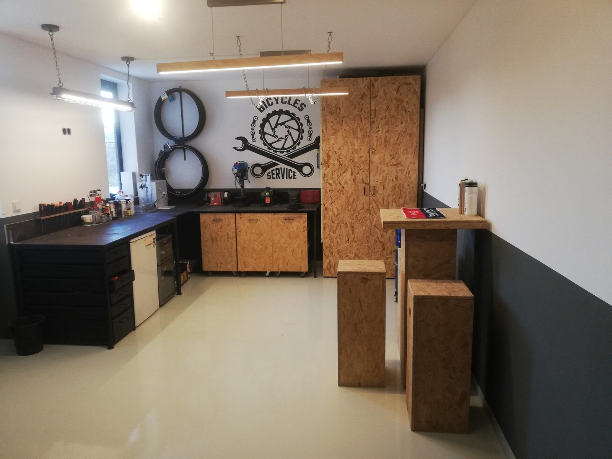
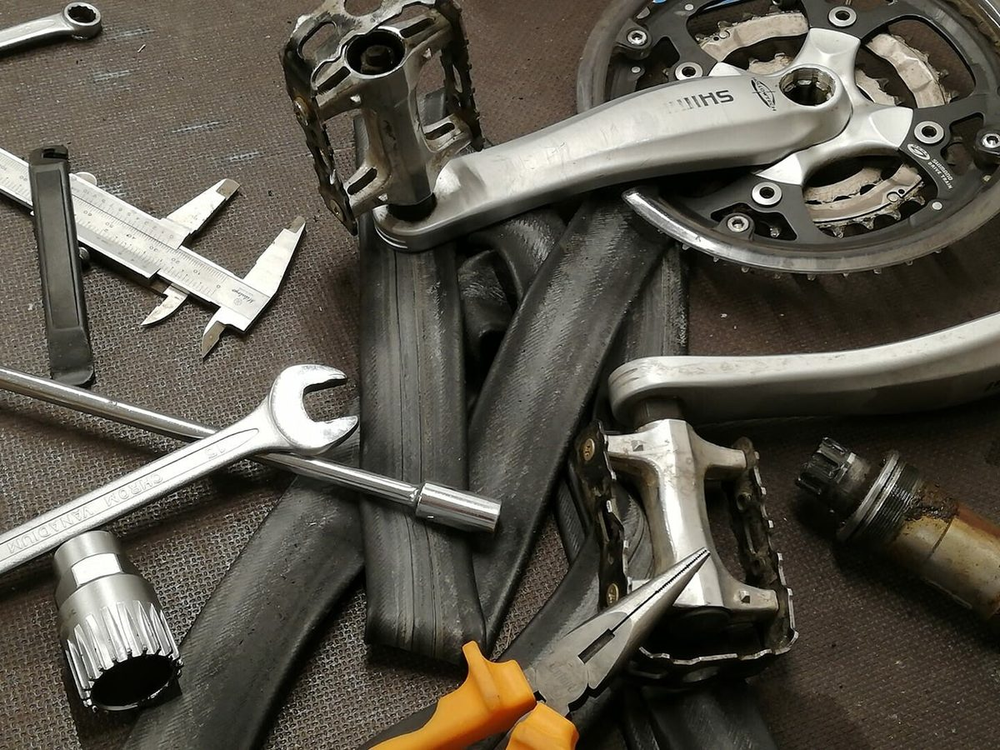
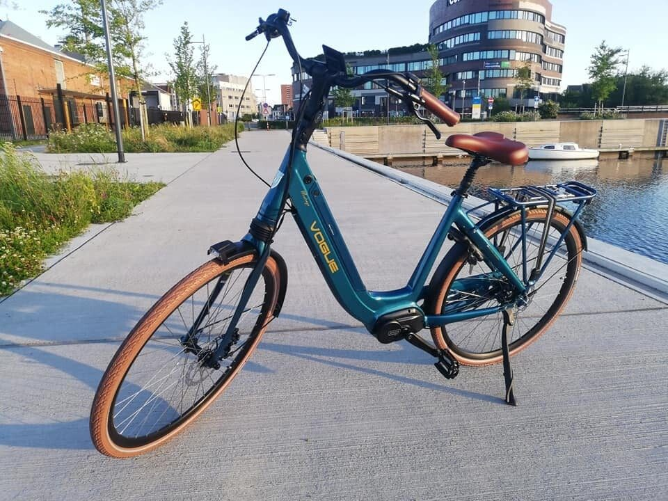
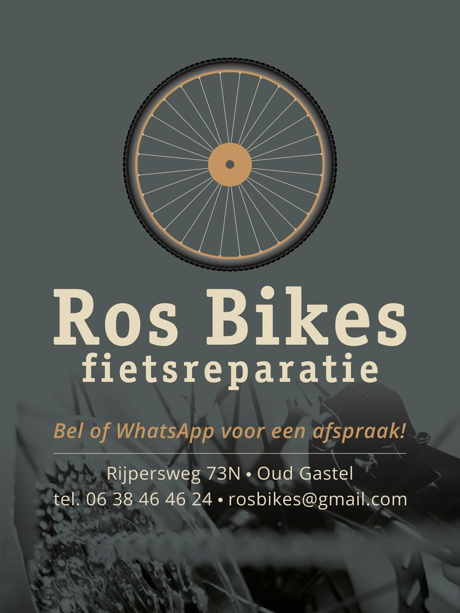

Onderhoud en reparatie van uw fiets of e-bike, op afspraak. Vaak kunt u uw fiets dezelfde avond of zaterdag nog brengen. Een leenfiets staat gratis voor u klaar.
Voor alle voorkomende reparaties en onderhoud aan uw fiets of e-bike. Een vrijblijvende prijsopgave kan altijd.
Elektronische problemen aan een e-bike (software, display, accu of motor) in overleg.

We werken op afspraak, zodat uw fiets direct de aandacht krijgt.
“Zowel mijn normale fiets als racefiets gebracht voor de onderhoudsbeurt. Allebei weer perfect gemaakt terug gekregen! Erg snel en tegen een lage prijs. Zeker Rosbikes aangeraden!”
Ramonvia Trustpilot“Keurige en vriendelijke reactie. Goede bereikbaarheid. Duidelijke en eerlijke prijsopgave. Goede service.”
Lisette R.via Trustpilot“De spaken weer op spanning gezet kon er op wachten. Echt super. Voor onderhoud gaat de step voortaan hier naar toe.”
Pleunie E.via Trustpilot“Super snel en goed werk afgeleverd! En dat voor een lage prijs. Zeker een aanrader!”
Laura v. M.via Trustpilot“Reparatie vlot en netjes”
Nicole R.via Trustpilot“Goede service, wederom”
Angelo E.via Trustpilot
Op zoek naar een betrouwbare e-bike voor een normale prijs? Ros Bikes is officieel dealer van Vogue. Er staan altijd diverse e-bikes en een bakfiets op voorraad, dus een proefrit is zo geregeld.
Ook voor een huurfiets, een nagekeken occasion en accessoires kunt u bij Ros Bikes terecht.
Huur een fiets voor een dag of langer. Het zijn gewone stadsfietsen, helemaal nagezien en in goede staat.
Een dag is van 9.00 tot 17.00 uur. Weekend: vrijdag ophalen, uiterlijk maandagochtend terug. Per maand op aanvraag. Prijzen incl. btw.
Fiets reserverenWe hebben altijd een paar goede tweedehands fietsen te koop. Een nieuwe fiets van een ander merk, zoals Gazelle of Cortina, is ook bespreekbaar.
Ook voor accessoires en onderdelen: verlichting, sloten, kinderzitjes, binnen- en buitenbanden.
Vraag naar het aanbod
Ros Bikes is eind 2019 opgericht door Stefan Ros. Hij repareert al ruim 20 jaar fietsen: als fietstechnicus opgeleid in Bergen op Zoom en 14 jaar aan het werk bij Martens Tweewielers in Rucphen. Inmiddels in een eigen werkplaats aan de Vierschaarstraat in Oud Gastel.
“Tevreden klanten zijn immers de beste reclame.”
Stefan doet Ros Bikes naast zijn vaste baan. Daarom werkt hij op afspraak, doordeweeks in de avond en op zaterdag, en reageert hij het snelst via WhatsApp.
Stuur een WhatsApp, dat is het snelst. Bellen of mailen kan natuurlijk ook.
Op afspraak: doordeweeks in de avond en op zaterdag.